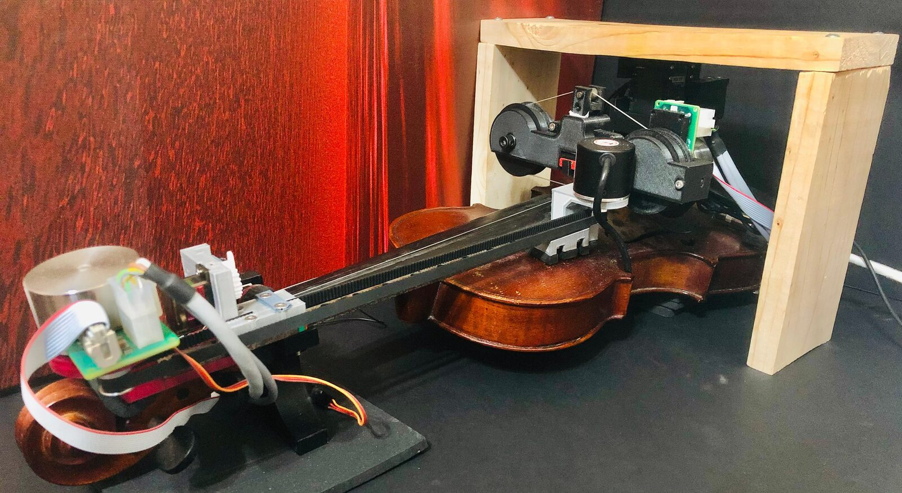
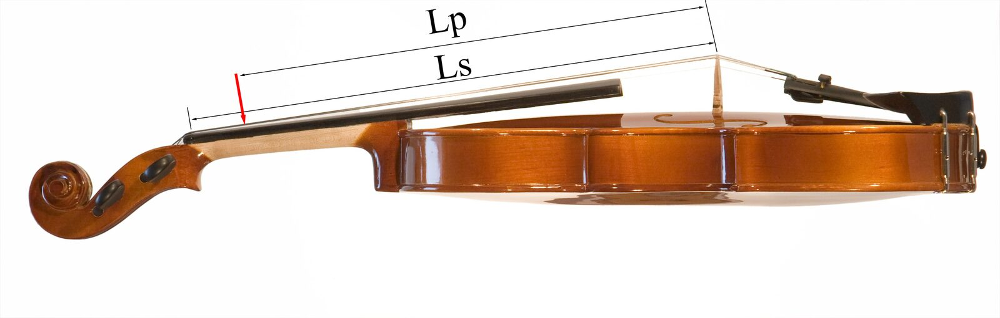
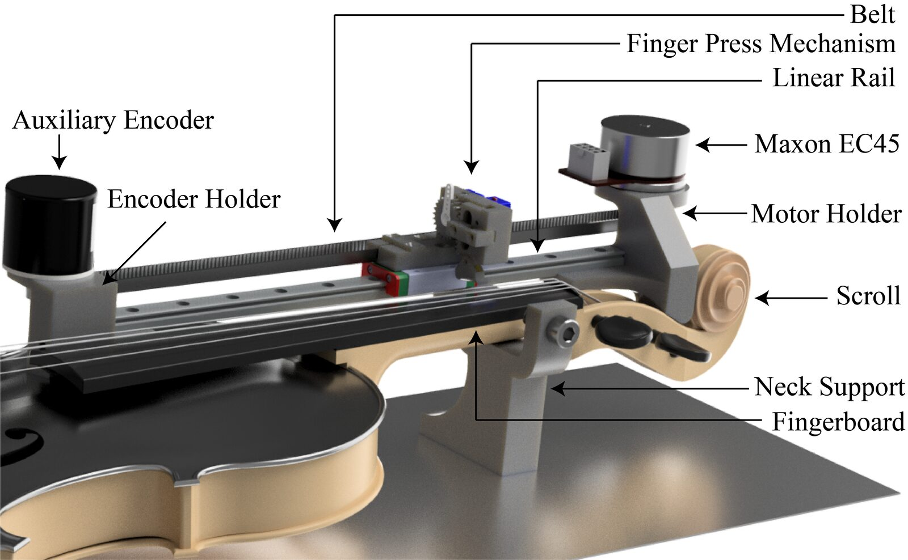
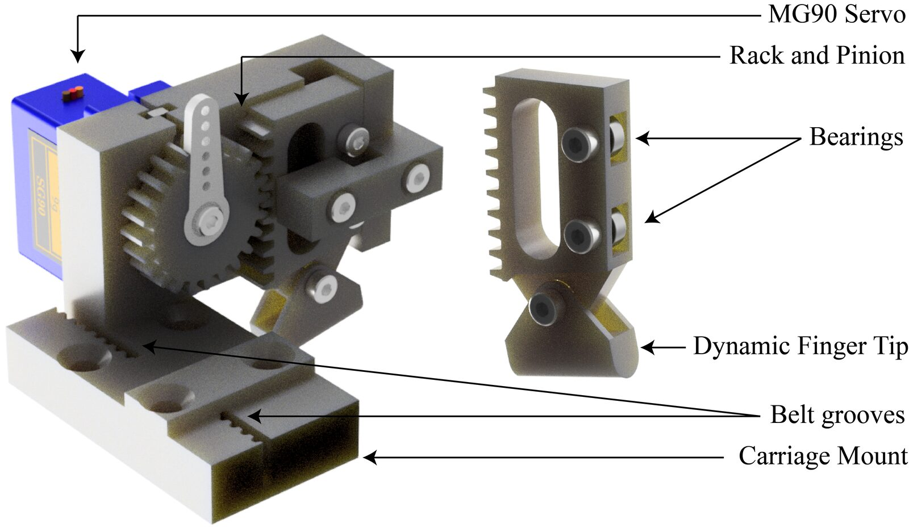
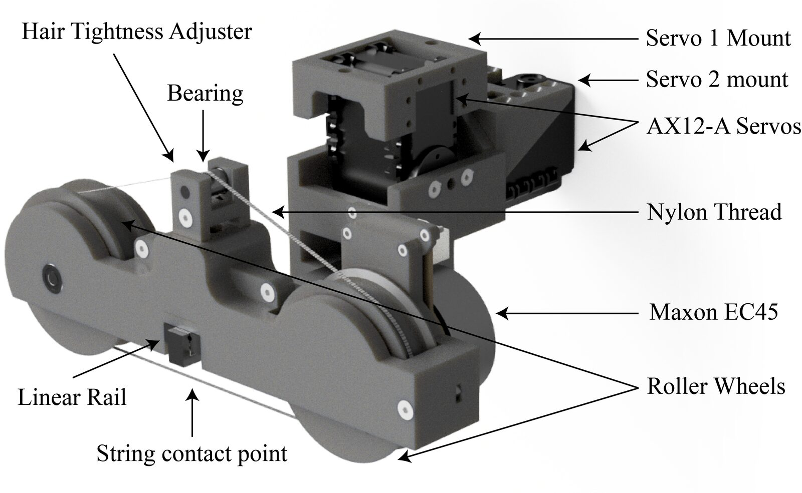
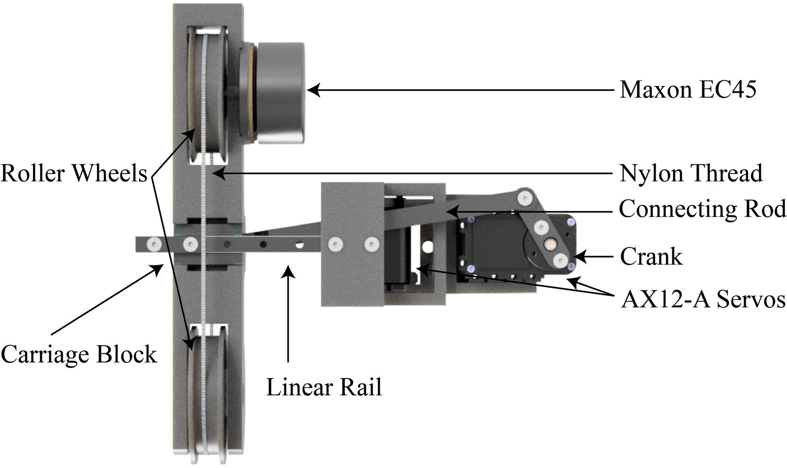
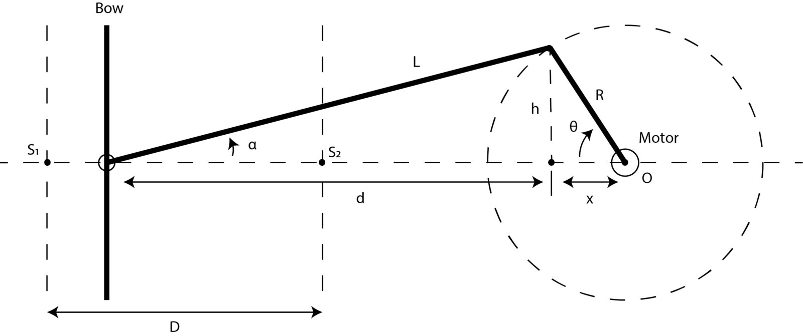
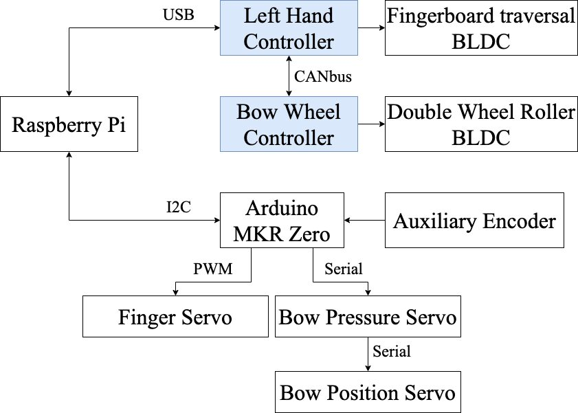
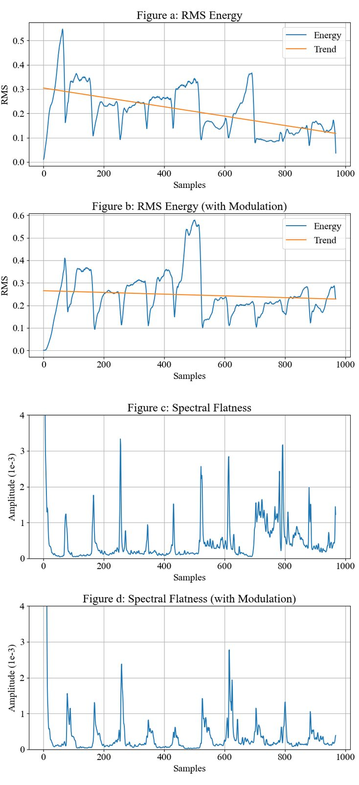

Design of Hathaani - A Robotic Violinist for Carnatic Music
Abstract
We present a novel robotic violinist that is designed to play Carnatic music - a music system popular in the southern part of India. The robot plays the D string and uses a single finger mechanism inspired by the Chitravina - a fretless Indian lute. A fingerboard traversal system with a dynamic finger tip apparatus enables the robot to play gamakas - pitch based embellishments in-between notes, which are at the core of Carnatic music. A double roller design is used for bowing which reduces space, produces a tone that resembles the tone of a conventional violin bow, and facilitates super human playing techniques such as infinite bowing. The design also enables the user to change the bow hair tightness to help capture a variety of performing techniques in different musical styles. Objective assessments and subjective listening tests were conducted to evaluate our design, indicating that the robot can play gamakas in a realistic manner and thus, can perform Carnatic music.
Author Keywords
Violin, Robot, Carnatic Music, Gamaka, Closed loop Control, Finger Position Feedback
CCS Concepts
•Applied computing → Sound and music computing; •Information systems → Music retrieval; •Computer systems organization→Robotics
Introduction
Carnatic Music is a system of music commonly associated with southern part of India. The main emphasis of the system is vocal music, known as the ’Gayaki’ style [1]. A notable trait of the genre is the use of microtonal variations, where musical notes (Swaras) of phrases are almost always performed with ornamentation called ‘gamakas’. A raga is a melodic framework akin to a melodic mode, in Indian classical music [2]. Unlike western music where the modes/scales are only defined by the notes and the key, in Carnatic music, the gamakas are integral parts of asserting a raga.
For a robot to play Carnatic music, it needs to be able to perform swaras with gamakas. In a typical Carnatic music concert, the violinist accompanying the lead artist follows the lead melody and improvises in real-time with variations around it in segments such as alapana, swara kalpana, niraval and thaanam [3]. Thus, a robotic violinist designed for Carnatic music needs to be able to analyze audio phrases and replicate the performance, as expected by a human violinist accompanying in a concert. Since Carnatic music is vocal centric, it requires bow changes to follow syllable change in the lyrics. The robot should not only follow the swara variations but also the dynamics and bow changes by modulating the bowing speed and the hair pressure on the string.


Hathaani - The Carnatic Violin Robot
Considering these requirements, we present a novel design of a robotic violinist that plays Carnatic music1. It is shown in Figure 1. Building such a robot has many applications in music production and education. Western composers have various tools such as keyboards and VSTs to experiment and listen to how their piece would sound before inviting musicians to perform. For Carnatic music no such tools are available that supports gamakas. The composers are forced to learn keyboard playing techniques that uses pitch bends and portamento to play gamakas. Software based emulations (such as VSTs) are hard to accurately model the limitations of violin playing and the timbre that the real instrument produces. Using our robot in these scenarios can solve these difficulties. They can also be used to teach Carnatic violin. Robots don’t get fatigue like humans and they will make learning more accessible to students. Robot performances in this genre will increase popularity and create awareness about Carnatic music among international audience.
Related Work
Previous work in robotic musicianship for violin performance has largely focused on the replication of Western Classical music and on playing pre-written sequences of discrete notes. Such systems do not address expressive performance techniques such as glissandi or gamakas. For example, the Hupfeld Phonoliszt-Violina [4] and Violano Virtuoso [5] feature a distinct approach to sound generation, yet they are limited to hard-coded piano rolls and are unable to play glissandi. One of the popular builds was the Toyoto’s violin playing robot [6]. It is an andro-humanoid robot that holds and plays the violin just like human violinists. Their intention was to showcase it as a general purpose social robot and violin playing was just a demonstration of it. Seth Goldstein’s Ro-Bow [7] addresses microtonal playing using a movable finger mechanism with a design that rotates the violin for string shifts. However, this design does not modify the bowing position according to the left hand movement affecting the tonal quality of the sound produced. The Ro-Bow also requires a large apparatus around the violin, which is not practical in a Carnatic concert setting. The idea of kensei from Shibuya, K. [8] is an interesting concept where the system listens to the output to improve its sound quality by adjusting the bowing parameters, modeling how humans play the instrument. However, their system was not designed with performance in mind. It is hampered by the left hand which uses a three finger mechanism that is mounted statically, limiting the robot from playing higher note positions and other scales. It also lacks left hand and bowing arm coordination.
Design
Our robotic violinist design is divided into two sub sections - the Fingerboard Traversal and Bowing. Design decisions have been carefully made considering the requirements of the genre it is intended to perform.
Fingerboard Traversal
The fingerboard traversal design is inspired by the human left hand movements (throughout this paper, we will also use the term "left hand" to denote the fingerboard traversal). Violinists use their elbow joints for larger movements and use their fingers to stop the string. We designed our system similarly.


Side view of the violin showing the Scale Length (Ls) and the play length (Lp). The violin picture is a courtesy of wikimedia

As explained in the introduction section, the design needs to facilitate playing gamakas. In technical terms, the robot needs to be able to modulate the pitch in the continuous domain over time. Figure 2 depicts the side view of an acoustic violin. represents the scale length, which is the distance from the bridge to the Nut. The red arrow depicts an example finger position, playing a major second. is the distance of the finger position from the bridge. The fingerboard traversal system should be able to stop the string at any point on the string such that <Ls. By varying , we can vary the string length, thus changing the pitch. Assuming an equal temperament scale for simplicity, the pitch position is a function of 12th root of 2. For a given open string tuning, the distance from the bridge can be computed for any fret position using Equation 1.
Our first goal was to make the robot play the arohanam 2 and avarohanam 3 of the raga Shankarabharanam with gamakas. With D as the root, the raga is equivalent to a D-Major scale in western music. With this intention, our robot was designed to play one string (D string). The traversal is implemented with a 300 mm linear slider. The linear slider is driven by the Maxon EC45 70W Brush-Less DC (BLDC) Motor with the EPOS4 50/5 Positioning controller using a belt. The other end of the belt has an auxiliary encoder to track the finger position in real-time. Its function will be detailed in auxiliary encoder section.


Fingerboard traversal mechanism
Our initial design used four hold points to strap the system to the violin. Specifically, the scroll, the neck, the fingerboard top (near the bridge) and the body. We 3d-printed all the components using ABS plastic. Our experiments showed a significant decrease in noise when the fingerboard and body holders were removed without affecting the stability. To further reduce the noise from the mechanical systems, foam padding was added to all the contact points of the structure. The violin’s sound masks the residual noise of the system making the noise inaudible during performance.
Figure 3 also shows the neck and the scroll support frames for the left hand movement. The neck support is fastened used a hex screw. The height of this structure is designed in such a way that the violin’s string would lay parallel to the ground. The scroll support is designed to rest the motor holder on the scroll. No screws were needed for the scroll support since the encoder and motor holder counteract each other to hold the system in place. Since only one screw holds the entire system, it is easy to remove the violin from the robot to replace strings, tune it, etc.
String Stopping
The string pressing system uses a single finger design, inspired by the Indian instrument - Chitravina [9]. Chitravina is a popular 21 stringed, fretless lute with history going back to at-least 2000 years. The instrument is played using a slide similar to a Hawaiian guitar, demonstrating that gamakas in Carnatic music can be performed with just one finger.


The actuation mechanism of the finger press
Figure 4 shows the 3d model of the finger press actuator system. The "finger" itself is driven by a MG90 micro servo motor with metal gears coupled by a rack and pinion mechanism and a dynamic finger tip. The finger tip is designed to adapt to the fingerboard curvature. Since the surface normal vector of the fingerboard is different at every point, an adaptable finger tip is necessary to have the most efficient press. The finger has roller bearings to minimize friction while sliding over the support structure. The finger tip is resin printed to allow for flexibility while pressing the string. Further, a silicon coating is added to the bottom side. The silicon coating brought the tip’s damping factor close to that of human skin, thus improving the tonal quality.
Bowing
Bowing speed, bowing force, and sound point are the three factors relevant to bowing that determine the sound quality of a violin [10]. Figure 5 shows our bowing mechanism design, addressing these parameters using three degrees of freedom:
Roller Wheels - moves the bow hair
Bow Pitch - adjusts the bow pressure
Bow Position - adjusts the bowing position along the string


The Bowing mechanism - Perspective View


The Bowing mechanism - Bottom View
The whole system is mounted on a wooden frame that was removed from this figure for clarity.
There are various techniques by which a string of the violin can be excited. Some conventional methods include an actual violin bow, or wheels as in the hurdy gurdy [11]. We chose a similar design since a conventional violin bow introduces a few limitations: A full size bow occupies more space and makes it harder to implement playing techniques such as infinite bowing. Moreover it requires more degrees of freedom and power due to the dimensions of a bow.
Roller Wheels
We experimented with different bowing mechanisms to find the timbre that sounded close to a conventional acoustic bowing. The trials included different wheel designs, including a single roller wheel design and a double roller wheel design. The single roller wheel design trials included Wood, Acrylic and Plastic (ABS).
The double roller wheel design shown in Figure 5 has 2 roller wheels. Nylon thread is spun around these wheels to form a belt like structure. Rosin is applied on the thread to get the necessary friction for bowing. These threads move across the string to excite it and produce sound. This mechanism is loosely inspired by Tufts Robotic Violin Project [12]. One of the wheel is also driven by a Maxon EC45 BLDC motor whose speed of rotation is closed loop velocity controlled. It controls the speed of movement of the bow hair on the string which is analogous to bowing faster/slower on a conventional bow.
This double roller wheel design was selected as our final design since it produces a similar hair tension to that of a real violin bow hair.
Pressure
The hair pressure exerted on the string is varied using a Dynamixel AX12-A Servo. Since these servos can be daisy chained, it is advantageous to use them to simplify wiring. It is mounted on the "Servo 1" mount as shown in Figure 5.
This degree of freedom also controls the bow hair contact with the string, replicating the manner in which humans place the bow on and off the string. Since the bowing system is static with respect to the violin, we used a combination of feed forward and feedback system for pressure modulation. Left hand position tracking is used as feedback to adjust the pressure when playing higher finger positions. We tuned the angle of the servo to obtain the required pressure.
Position
The bow position on the string is dependent on the finger position on the fingerboard. The higher the position of the finger on a string, the closer the bow needs to be to the bridge to produce a rich intonation and tone.


Slider Crank Diagram
We implemented the bow position modulation using a slider-crank linkage mechanism. This degree of freedom is also driven by a Dynamixel AX12-A Servo. Figure 7 shows the slider crank mechanism. The point denotes the top of the fingerboard and the point denotes the position of the bridge. When the left hand finger plays higher note positions, the bow needs to move towards . The maximum distance of the bow can be S and the minimum is S. The displacement is denoted as . For any given distance , we need to know the angle to rotate the servo to. The length of the crank is and the length of the connecting rod is .
The total displacement of the bow from the motor is given by for a given angle
When the above equation can be approximated to
Practically, this approximation does not lead to noticeable effect in tone quality while saving a lot of computational power.
The actual design is depicted in Figure 6. The roller wheel system is mounted on a 100 mm linear rail constraining the movement to only one axis. An adjustment multiplier is used when mapping the finger position to the total displacement. This value is tuned to obtain the desired tone.
Hair Tightness Tuning
One notable practice among violinists is adjusting the bow hair tightness depending on the style of the piece. High energy and fast paced music generally require high bow hair tension to make the bowing more responsive and bright while a low energy or a sad piece require low bow hair tension. The double roller wheel design enables the robot to change the bow hair tension similar to a conventional bow. This is not possible with other bowing techniques such as the single wheel designs mentioned in Roller Wheels section. Figure 5 shows the hair tightness adjuster which can be manually adjusted using the screw, which in turn adjusts the height of the bearing. This affects the tension of the bow hair.
Hardware
The main control of the robot is done through a Raspberry Pi 4, which coordinates all parts of the system.


Data flow and communication
The communication and data flow architecture is depicted in Figure 8. The Raspberry pi does not control the actuators directly but through their respective controllers. The Pi communicates with the Fingerboard traversal EPOS4 Controller, Bow Roller Wheel EPOS4 Controller and Arduino MKR Zero Micro Controller. The controllers denoted in blue represent the EPOS4 which control the EC45 BLDCs. The Arduino MKR Zero micro controller uses a powerful ARM Cortex M0+ Chip, operating at 3.3V logic level. The Pi communicates with the micro controller via I2C communication protocol. It is connected to the first EPOS4 controller via USB while the other EPOS4 controller is daisy chained to use CAN-bus protocol. The Micro Controller handles the finger servo (MG90) through PWM. It controls the Dynamixel AX12-A servos for the bow pressure and position modulation as discussed in fingerboard traversal and bowing sections through serial communication. The micro controller also handles data acquisition from the auxiliary encoder. The MG90 and the AX12-A were adequate for the respective DoFs. They also have a low noise when used for small rotations. This saves a lot on cost and also the ease of controlling them when compared to using an industrial level BLDCs for these DoFs.
Auxiliary Encoder
Apart from the encoders embedded in the motors, we installed an auxiliary rotary encoder since our tests showed that the embedded encoder data retrieval did not support realtime operation. The setup of the encoder is shown in Figure 3. The BLDC motors use their embedded encoders for position and velocity control for left hand movement and bow wheel roll respectively. The auxiliary encoder is used to retrieve the current position of the finger in realtime, sampled at 200 Hz. The finger position information is used to adjust the bow position, bow pressure and finger tip height from the fingerboard.
The amount of excitation required is dependent on the point at which the string is excited. To achieve tonal consistency, bowing near the fingerboard requires less excitation compared to bowing near the bridge. One way to counteract this is by modulating the bow pressure, so that pressure exerted increases slightly as the bow position becomes close to the bridge.
Bow position modulation is detailed in the bow position section.
In a conventional violin, the string height is not uniform along the fingerboard. The height of the string near the nut is smaller than the top of the fingerboard (bridge side). Thus the finger tip’s height needs to be corrected for this displacement while playing to have the finger press grip consistent across the length of the string. The position information from the auxiliary encoder is used to adjust the height of the finger tip (i.e. the distance from the finger tip to the string) both while playing and in OFF positions.
Software
The main application that runs on the Raspberry pi and the Arduino firmware are programmed in C++4.
Input data structure
We implemented the software to use two types of inputs. The first input type is a series of fret numbers, time and bow change indices. The fret number is represented by float value from 0.0 to 15.0 where 0.0 represents open string, 1.0 represents the minor second, etc. The time index represents the amount of time in seconds in which the fret position needs to be held for. Bow change is represented by a boolean array which indicates whether a bow change is required. An example of playing a phrase in raga kalyani is shown below.
F#∣G#G#∣A#A#∣B∣∣ is the phrase performed with spurita gamaka [13].
The second input type is a JSON file, which was chosen as an effective format to allow the robot to interpret and learn different features from an audio recording of human violin performers. The JSON file contains 3 sets of arrays - Pitch, Bow and Amplitude. Each Pitch and Amplitude values are 5.805 ms apart. The pitch values are key normalized and contain the corresponding amplitude which ranges between 0.0 and 1.0. Silence or rest is denoted with a negative pitch value. The bow array contains index values to indicate where the bow direction needs to be changed. We wrote a python script to obtain all these values from a violin recording. A rule based bow change detection algorithm is implemented to detect the bow changes from a violin recording. To obtain the pitch values, we used the pYin pitch detection algorithm [14] from the librosa library [15] windowed at 2048 samples with a hop size of 256. We use the JSON format input when we want the robot to perform a phrase by example from a human playing.
Evaluation
We evaluated our system using objective and subjective metrics. Bow Position and Pressure Modulation were evaluated using objective measurements. The robot’s ability to play expressive gamakas was evaluated through an expert listening test.
Bow Position and Pressure Modulation
To obtain a rich human-like tone, we need to have a uniform excitation of the string. As explained in the bow pressure and position sections, the vertical distance of the string from the fingerboard is higher near the bridge than the nut. Thus, adjusting the position and pressure based on the position of the left hand is necessary for achieving a consistently good tone. To evaluate the effectiveness of the bow position and pressure modulation, we programmed the robot to play the D Major Scale up to the playable limit of the robot on the string. We used the Root Mean Square (RMS) energy and the spectral flatness [16] as features to evaluate the loudness and tonality respectively. Spectral flatness measures the tonality level in the audio signal. The higher this value, the noisier and less-tonal the signal is. Figure 9 shows the RMS energy and the spectral flatness with and without bow position and pressure modulation.


Effects of Bow Position and pressure Modulation
In Figure 9, a line - shown in orange, is fit to the data points to show the loudness trend as the finger position increases. Figure 9.a shows that without bow position and pressure modulation, the loudness drops at higher left hand positions. Figure 9.b shows that the energy stays mostly consistent when using the pressure and position modulation. We attribute the troughs in the graph to bow changes, and the inconsistent note peak at ~500th sample in Figure 9.b by the strong resonances of the note A on that particular violin. This inconsistency is not evident in Figure 9.a because the loudness drops down at that finger position. We confirmed this explanation by evaluating ten different instances of the performance with all of them showing a similar trend.
Figure 9.c and Figure 9.d show the spectral flatness plot with and without bow pressure and position modulation respectively. The peaks can be attributed to the left hand movement. It is evident that the tonality decreases as the left hand moves higher on the fingerboard, while when the modulations are active, the tonality is well maintained.
It can be observed that the bow change peaks are wider when using the pressure and position modulation. This can be explained by the motor noise introduced when the modulation is in action. The adjustment parameters in the bow pressure and position sections are tuned to obtain the best tone without introducing too much of the actuator noise.
Expert Listening Test
We evaluate the effectiveness of the robot in playing gamakas by inviting six Carnatic music experts to participate in a listening test. The artists have at least 15 years of experience in performing Carnatic music concerts and have in-depth knowledge of Carnatic music theory - especially in understanding and interpreting gamakas.
In designing the experiment, we followed the book - Sangita Sampradaya Pradarsini (SSP) [13] by Subbarama Dikshitar, which is one of the seminal text books for gamaka classification and notation. The original telugu version of the book was first published in 1904. It was one of the first attempts for notating and classifying gamakas that are close to how the gamakas are rendered today. From the SSP book, we chose seven popularly used gamakas that are relevant to violin playing. These are Kampita, Sphurita, Tirupa / Nokku, Ahata, Vali, Ullasita and Kurula. The audio samples used in the listening test can be found at Hathaani-audio-samples.
It is to be noted that the gamakas classified in SSP have some overlaps. For instance, Vali gamaka often contains Ullasita or Kampita gamakas in it’s rendition. It is impractical to construct phrases with just one gamaka type. The recorded phrases contain a predominent gamaka type with other supporting gamakas. The listening test consisted of three sections as described below.
Sarali Varisai
The first section tests the ability of the robot to play basics of Carnatic music - the first sarali varisai [17] in 4 different ragas. As part of the test, participants were asked to guess the raga that is being played by the robot. A 5 point, 0.5 increment scale was used to rate each of the performance on the basis of pitching / intonation, timbre / tone, quality of bowing, right-left hand coordination and overall clarity. Overall, the participants were able to guess all the ragas in this section correctly. The mean and standard deviation of the combined scores from participants is given in Table 1.
Mean | std | |
|---|---|---|
pitching / intonation | 4.77 | 0.49 |
timbre / tone | 3.96 | 0.93 |
quality of bowing | 4.29 | 0.82 |
right-left hand coordination | 4.73 | 0.51 |
Overall clarity | 4.63 | 0.59 |
Sarali varisai scores
Gamaka Identification
In the second section participants listened to 16 audio recordings of short robotic generated phrases. Each phrase was about three seconds long containing one or more gamakas from the seven chosen types. The participants were asked to list all the gamakas present in each phrase and rate the performance. Participants were also asked to rate authenticity of gamaka, which measures how accurate each gamaka was performed. The participants were able to spot the predominant gamakas most of the time. Table 2 shows the participants’ entry for each question. The first column lists the predominent gamaka(s) present in each phrase.
Q No. | Predominant gamaka | Kampita | Spurita | Nokku | Ahata | Vali | Ullasita | Kurula |
|---|---|---|---|---|---|---|---|---|
1 | Spurita | - | 6 | - | - | - | 1 | - |
2 | Kampita | 5 | - | 1 | 2 | 1 | 3 | 2 |
3 | Kampita, Ahata | 6 | 1 | - | 3 | 2 | 2 | - |
4 | Ullasita, Spurita | 1 | 5 | 2 | - | - | 5 | - |
5 | Spurita | - | 6 | - | 1 | - | - | - |
6 | Ullasita, Vali | - | 1 | 3 | 1 | 3 | 5 | 1 |
7 | Ahata | - | - | - | 5 | - | 1 | 1 |
8 | Spurita | - | 6 | - | - | - | 1 | - |
9 | Nokku | 1 | 1 | 6 | 1 | 3 | 2 | 1 |
10 | Kampita | 6 | 1 | 2 | 1 | 1 | 1 | 2 |
11 | Vali, Spurita | 3 | 4 | 1 | 2 | 2 | 3 | 2 |
12 | Kampita | 6 | - | 2 | 1 | - | - | 1 |
13 | Vali | 3 | - | - | - | 5 | - | 1 |
14 | Vali, Nokku | 3 | - | 3 | 2 | 3 | 2 | 1 |
15 | Kurula | 1 | - | 1 | - | 1 | 2 | 4 |
16 | Vali, Nokku | 3 | 1 | 3 | 1 | 4 | 2 | 2 |
Predominent gamaka vs participants’ guesses
It can be seen that participants had no ambiguity with guessing the Spurita gamaka. It is notable that in some cases, the participants tagged Ullasita when tagging Ahata (Ravai). This suggests that a second robotic finger may be necessary since the quick movement of the left hand to play Ahata could have been mis-interpreted as Ullasita. The Vali gamaka was most often confused for other gamakas. This can be attributed to the fact that Vali involves playing shades of multiple swaras. Thus, it contains other gamakas associated with it.
Though SSP is one of the standard references used by researchers today, it has a few limitations. Experts who took the survey mentioned that though these gamakas are in use even today, their type nomenclatures are rather archaic. The gamaka classifications are not mutually exclusive. This explains the reason for mis-tagging of gamakas in some cases as shown in Table 2. Participants also mentioned that the book explains gamaka techniques as used by the Veena [18] and therefore it is difficult to visualize the same techniques in other instruments.
The mean and standard deviation of the combined scores from the participants is given in Table 3.
Mean | std | |
|---|---|---|
pitching / intonation | 4.83 | 0.37 |
timbre / tone | 3.75 | 0.63 |
quality of bowing | 4.17 | 0.62 |
right-left hand coordination | 4.83 | 0.37 |
authenticity of gamakas | 4.5 | 0.71 |
Overall clarity | 4.33 | 0.55 |
Gamaka scores
Raga Identification
This third part of the study addressed Raga Identification, containing audio recordings of short phrases performed by the robot. As mentioned in the introduction section, gamakas in Carnatic music are not just ornaments but a vital part of the rendition of a raga. We recorded characteristic phrases of 11 different ragas - Neelambari, Bhairavi, Arabhi, Kanada, Dhanyasi, Mohanam, Thodi, Sahana, Saveri, Anandhabhairavi and Sindhubhairavi. None of the phrases contained the complete arohanam and avarohanam. This means that not all the notes of each raga were revealed. Thus the participants needed to rely on the gamaka to guess the raga. For instance, the phrase used for the raga sindhubhairavi is | p D P d n s r G r S R S | 5. These swaras are also valid in Thodi but they differ by the gamakas used to perform the phrase. The participants were able to guess all the 11 ragas correctly. The mean and standard deviation of the combined scores from the participants for this section is given in Table 4.
Mean | std | |
|---|---|---|
pitching / intonation | 4.67 | 0.55 |
timbre / tone | 3.58 | 0.61 |
quality of bowing | 4.08 | 0.53 |
right-left hand coordination | 4.75 | 0.38 |
authenticity of gamakas | 4.75 | 0.38 |
Overall clarity | 4.58 | 0.53 |
Raga scores
Conclusion
We presented a novel design of a robotic violin player which can play Carnatic music. The left hand design allows the robot to play any position on a string, which supports the production of gamakas. The robot’s dynamic finger tip is designed to adapt to the curvature of the fingerboard. The bowing mechanism has three degrees of freedom. It uses a double roller wheel design with nylon threads spun around the wheels that move across the string to excite it. The two other degrees of freedom vary the pressure exerted and the position of bowing on the string. The bow design also enables the user to change the tightness of the bow hair which is required when performing different styles of music within the genre. Expert listening tests were performed with six professional musicians to evaluate the effectiveness of the robot in playing gamakas. The participants guessed all the ragas correctly, suggesting that the robot can play gamakas, which are the core of Carnatic music.
Future Work
We intend to extend the robot to play multiple strings, to produce better timbre, and to increase playing range. While the robot can play the selected seven gamakas with one finger satisfactorily, some gamakas, such as Spurita would sound better with multiple fingers. We, therefore, plan to add at least one more robotic finger in the next design. The bow pressure modulation in the current design is a combination of feedforward and feedback control with feedback only from the auxiliary encoder. We plan to add force feedback to the design and hope it would improve the bowing quality and the produced timbre.
On the software side, the robot currently only performs pre-recorded sequences and cannot interpret gamakas and improvise. We, therefore, plan to implement an interpreter system that synthesizes gamakas given the swaras and ragas.
Acknowledgements
We sincerely thank the artists - Embar Kannan, Aarti Ananth Krishnan, Rangappriya Sankaranarayanan, Anusha Sreeram, Sowmya Srinivasan and Ramesh Vinayakam for their participation and valuable feedbacks.
Footnotes
Watch Hathaani demo here
↩Ascending melodic movement
↩Descending melodic movement
↩Source code can be found at Hathaani Repo
↩Refer the SSP book for the swara notation convention
↩
Citations
- ↩Benary, B. (1972). Composers and tradition in karnatic music. Asian Music, 3(2), 42–51. Retrieved from http://www.jstor.org/stable/833958
- ↩Lochtefeld, J. G. (2001). The illustrated encyclopedia of hinduism, volume 1 (p. 545). Rosen. Retrieved from https://books.google.com/books?id=5kl0DYIjUPgC
- ↩Wade, B. C., Jones, B. T., Zile, J. V., Higgins, J. B., Qureshi, R. B., Owens, N., & Flora, R. (1987). Performing arts in india: Essays on music, dance, and drama. Asian Music, 18(2), 1–249. Retrieved from http://www.jstor.org/stable/833942
- ↩Hupfeld phonoliszt-violina. (2015). Youtube; https://www.youtube.com/watch?v=qewdC3hX4iQ.
- ↩Violano virtuoso. (2012). Youtube; https://www.youtube.com/watch?v=Y50ws6zgUNc.
- ↩Kusuda, Y. (2008). Toyota’s violin-playing robot. Industrial Robot: An International Journal.
- ↩Goldstein, S. (2015). RO-bow - a kinetic sculpture that plays a violin by seth goldstein. Youtube; https://www.youtube.com/watch?v=EPTUM2_bxnQ.
- ↩Shibuya, K. (2011). Violin playing robot and kansei. In Musical robots and interactive multimodal systems (pp. 179–193). Springer.
- ↩Ravikiran, N. (n.d.). Chitravina. http://www.ravikiranmusic.com/chitravina.htm.
- ↩Jo, W., Lee, B., & Kim, D. (2016). Development of auditory feedback system for violin playing robot. International Journal of Precision Engineering and Manufacturing, 17(6), 717–724.
- ↩Green, R. A. (2016). The hurdy-gurdy in eighteenth-century france. Indiana University Press.
- ↩Tufts robotic violin project. (2012). Youtube; https://www.youtube.com/watch?v=nnSy6WKdQmY.
- ↩Dikshitar, S. (1973). Sangita sampradaya pradarsini. ibiblio (English, Vol. 1). The Music Academy. Retrieved from http://www.ibiblio.org/guruguha/ssp_cakram1-4.pdf
- ↩Mauch, M., & Dixon, S. (2014). PYIN: A fundamental frequency estimator using probabilistic threshold distributions. In 2014 ieee international conference on acoustics, speech and signal processing (icassp) (pp. 659–663). IEEE.
- ↩McFee, B., Raffel, C., Liang, D., Ellis, D. P., McVicar, M., Battenberg, E., & Nieto, O. (2015). Librosa: Audio and music signal analysis in python. In Proceedings of the 14th python in science conference (Vol. 8, pp. 18–25).
- ↩Lerch, A. (2012). Audio content analysis. ArXiv Preprint ArXiv:2101.00132.
- ↩Sarali varisai. (n.d.). http://www.shivkumar.org/music/basics/sarali-varisai.htm.
- ↩Krishnaswami, S. (2017). Musical instruments of india. Publications Division Ministry of Information & Broadcasting.